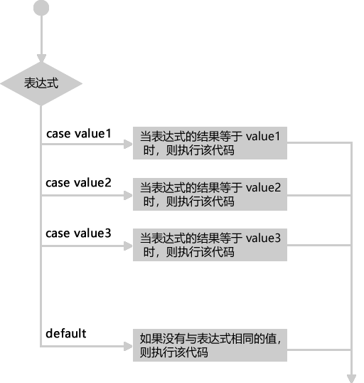

首页 > JavaScript
JS switch case语句详解
JS switch case 语句与 if else 语句的多分支结构类似，都可以根据不同的条件来执行不同的代码；但是与 if else 多分支结构相比，switch case 语句更加简洁和紧凑，执行效率更高。
JavaScript switch case 语句的语法格式如下：
break 除了可以用来跳出 switch 语句外，还可以用来跳出循环语句（for、for in、while、do while 等），后面我们会详细介绍。
【示例1】下面示例使用 switch case 语句设计网站登录会员管理模块。
【示例2】下面示例演示了把普通会员和 VIP 会员合并在一起进行检测。
在 switch 语句中，case 子句只是指明了执行起点，但是没有指明执行的终点，如果在 case 子句中没有 break 语句，就会发生连续执行的情况，从而忽略后面 case 子句的条件限制，这样就容易破坏 switch 结构的逻辑。
如果在函数中使用 switch 语句，可以使用 return 语句终止 switch 语句，防止代码继续执行。
【示例3】如果 default 下面还有 case 子句，应该在 default 后面添加 break 语句，终止 switch 结构，防止程序突破 case 条件的限制继续执行下面 case 子句。
【示例4】在下面代码中，JavaScript 先检测 case 表达式的值，由于 case 表达式的值都不匹配，则跳转到 default 子句执行，然后继续执行 case 1 和 case 2 子句。但是，最后不会返回 default 子句再重复执行。
【示例5】下面示例使用 switch 语句设计一个四则运算函数。在 switch 结构内，先使用 case 枚举 4 种可预知的算术运算，当然还可以继续扩展 case 子句，枚举所有可能的操作，但是无法枚举所有不测，因此最后使用 default 处理意外情况。
default 语句与 case 语句简单比较如下：
JavaScript switch case 语句的语法格式如下：
switch (表达式){
case value1:
statements1 // 当表达式的结果等于 value1 时，则执行该代码
break;
case value2:
statements2 // 当表达式的结果等于 value2 时，则执行该代码
break;
......
case valueN:
statementsN // 当表达式的结果等于 valueN 时，则执行该代码
break;
default :
statements // 如果没有与表达式相同的值，则执行该代码
}
switch 语句根据表达式的值，依次与 case 子句中的值进行比较：
- 如果两者相等，则执行其后的语句段，当遇到 break 关键字时则跳出整个 switch 语句。
- 如果不相等，则继续匹配下一个 case。
- switch 语句包含一个可选的 default 关键字，如果在前面的 case 中没有找到相等的条件，则执行 default 后面的语句段。
注意：switch 语句中，表达式是使用全等（===）来与各个 cese 子句中的值进行匹配的。由于使用的是全等运算符，因此不会自动转换每个值的类型。
switch 语句的执行流程（工作原理）如下图所示：

图：switch case 语句执行流程
图：switch case 语句执行流程
break 关键字
switch 语句是逐行执行的，当 switch 语句找到一个与之匹配的 case 子句时，不仅会执行该子句对应的代码，还会继续向后执行，直至 switch 语句结束。为了防止这种情况产生，需要在每个 case 子句的末尾使用 break 来跳出 switch 语句。break 除了可以用来跳出 switch 语句外，还可以用来跳出循环语句（for、for in、while、do while 等），后面我们会详细介绍。
【示例1】下面示例使用 switch case 语句设计网站登录会员管理模块。
var id = 1;
switch (id) {
case 1 :
console.log("普通会员");
break; //停止执行，跳出switch
case 2 :
console.log("VIP会员");
break; //停止执行，跳出switch
case 3 :
console.log("管理员");
break; //停止执行，跳出switch
default : //上述条件都不满足时，默认执行的代码
console.log("游客");
}
case 子句
case 子句可以省略语句，这样当匹配时，不管下一个 case 条件是否满足，都会继续执行下一个 case 子句的语句。【示例2】下面示例演示了把普通会员和 VIP 会员合并在一起进行检测。
var id = 1;
switch (id) {
case 1 :
case 2 :
console.log("VIP会员");
break;
case 3 :
console.log("管理员");
break;
default :
console.log("游客");
在 switch 语句中，case 子句只是指明了执行起点，但是没有指明执行的终点，如果在 case 子句中没有 break 语句，就会发生连续执行的情况，从而忽略后面 case 子句的条件限制，这样就容易破坏 switch 结构的逻辑。
如果在函数中使用 switch 语句，可以使用 return 语句终止 switch 语句，防止代码继续执行。
default语句
default 是 switch 子句，可以位于 switch 内任意位置，不会影响其它 case 子句的正常执行。下面结合示例介绍使用 default 语句应该注意 3 个问题。【示例3】如果 default 下面还有 case 子句，应该在 default 后面添加 break 语句，终止 switch 结构，防止程序突破 case 条件的限制继续执行下面 case 子句。
var id = 1;
switch (id) {
default :
console.log("游客");
break;
case 1 :
console.log("普通会员");
break;
case 2 :
console.log("VIP会员");
break；
case 3 :
console.log("管理员");
break;
}
【示例4】在下面代码中，JavaScript 先检测 case 表达式的值，由于 case 表达式的值都不匹配，则跳转到 default 子句执行，然后继续执行 case 1 和 case 2 子句。但是，最后不会返回 default 子句再重复执行。
var id = 3;
switch (id) {
default :
console.log("游客");
case 1 :
console.log("普通会员");
case 2 :
console.log("VIP会员");
}
【示例5】下面示例使用 switch 语句设计一个四则运算函数。在 switch 结构内，先使用 case 枚举 4 种可预知的算术运算，当然还可以继续扩展 case 子句，枚举所有可能的操作，但是无法枚举所有不测，因此最后使用 default 处理意外情况。
function oper (a,b,opr) {
switch (opr) {
case "+" : //正常枚举
return a + b;
case "-" : //正常枚举
return a - b;
case "*" : //正常枚举
return a * b;
case "/" : //正常枚举
return a / b;
default : //异常处理
return "非预期的 opr 值";
}
}
console.log(oper (2,5,"*")); //返回10
default 语句与 case 语句简单比较如下：
- 语义不同：default 为默认项，case 为判例。
- 功能扩展：default 选项是唯一的，不可以扩展。而 case 选项是可扩展的，没有限制。
- 异常处理：default 与 case 扮演的角色不同，case 用于枚举，default 用于异常处理。
关注公众号「站长严长生」，在手机上阅读所有教程，随时随地都能学习。内含一款搜索神器，免费下载全网书籍和视频。

微信扫码关注公众号